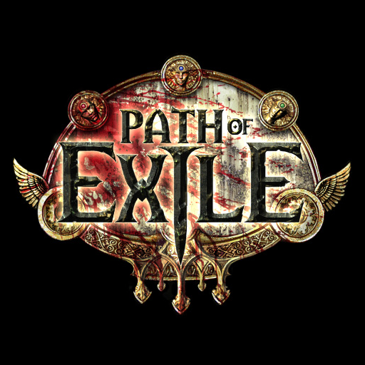
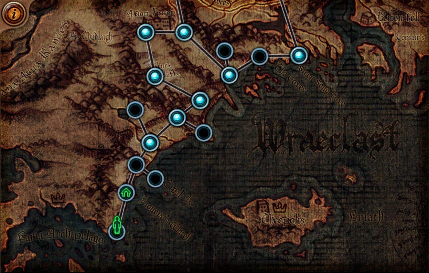
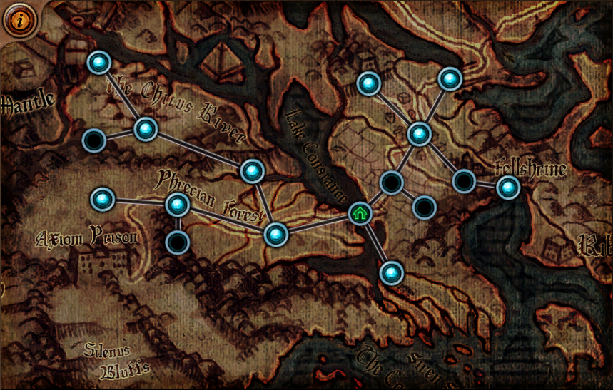
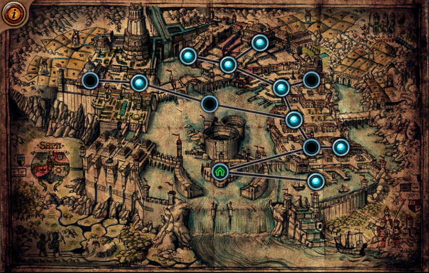

遊戲概述
《流亡黯道》是一款以瓦爾克拉斯大陸 ─ 被人們稱之為鬼島的地方
作為背景的黑暗幻想風格線上動作遊戲。 我們是一個由紐西蘭的資
深玩家所組成的獨立小團隊，並為了做出一款自己想玩的遊戲而創
作出了《流亡黯道》。 遊戲被設計圍繞在以物易物的交易經濟系
統、深度的角色客製化、極具競爭性的玩家對戰以及天梯競賽。 若
是你想加入流亡黯道的世界，馬上 建立 Garena 帳號吧！
腳色
在《流亡黯道》中有三個基本的人物屬性，每一位角色都有各自對應的屬性，但並不代表該位角色必定要朝該方向發展。
力量（紅色）：野蠻人
力量賦予的屬性偏向原始傷害的強化，武器上則以較高的基礎傷害來呈現。在防禦面，力量能夠提高角色對於物理傷害的減免。
偏重力量的怪物通常造成較高的傷害且比較難以擊殺。《流亡黯道》中偏向力量屬性的角色為：野蠻人。
敏捷（綠色）：遊俠
敏捷賦予的屬性偏向戰鬥中的靈敏性，武器上則以較高的攻擊速度來呈現。在防禦面，敏捷能夠使得角色更容易閃躲敵人攻擊。
偏重敏捷的怪物通常比較靈活且難以被擊中，且通常會保持距離進行攻擊，或是使用多種武器。《流亡黯道》中偏向敏捷屬性的角色為：遊俠
智慧（藍色）：女巫
智慧賦予的屬性偏向神秘魔法及致命的戰鬥技巧，武器上則以較高的致命率來呈現。
在防禦面，智慧能夠為角色帶來一層神秘的能量護盾，會優先替代血量來承受傷害，並在非戰鬥狀態下自然回復。
偏重智慧的怪物通常會是脆弱但致命的玻璃大砲，最好優先進行處理。《流亡黯道》中偏向智慧屬性的角色為：女巫
力量 / 敏捷：決鬥者
決鬥者是一個複合型的角色，偏向力量與敏捷。
力量 / 智慧：聖堂武僧
聖堂武僧是一個複合型的角色，偏向力量與智慧。
敏捷 / 智慧：暗影刺客
暗影刺客是一個複合型的角色，偏向敏捷與智慧。
力量 / 敏捷 / 智慧：貴族
貴族是一個複合型的角色，平均分配於力量、敏捷與智慧。
世界地區
瓦爾克拉斯：詛咒之地。這片遺落的大陸居住著一群幽懼、兇殘野獸與貪婪的亡靈。這塊土地瀰漫著黑暗、遠古的力量，大地顫抖著像在威嚇流亡者。亡
靈拒絕安息，帶著永恆的苦痛、怨念與飢餓的在這塊土地上遊蕩。而野獸則像突變種的生物，具侵略性且殘暴，潛伏在四周充滿著殺意，等著毫無防備的
旅者，將其撕裂吞噬。瓦爾克拉斯是一個適者生存的地方，但活著卻也可能會變瘋了。
第一章 - 海岸
所有的流亡者都只有一樣的選擇：淹死還是求生。那些沒淹死的流亡者會漂流到瓦爾克拉斯的遺落海岸，這邊是只會張開雙手，擁抱死亡的地方。可幸的
是有一小群人佔領了已成廢墟的燈塔，頑強抵抗著瘋狂的掠奪者以及來襲的不死大軍。在禁靈之獄管轄內，這群羊人則在崎嶇的懸崖上咆嘯怒吼，並確保
他們的羊蹄遠離那已被感染的漥地沼澤。整個海岸線上都沿漫著腐蝕破碎的沉船，那些水手的亡魂，就在旁邊遊蕩期待可以安心上路的時候。而女海妖則
依然唱著死亡之曲，期帶著下一次的船難發生。

第二章 – 森林
在更深入的內陸，穿越黑暗的山洞和陰森的森林，就能看到已成廢墟的文明城市。在時間的摧殘下，許多建築物都已磨損至平地，而那些腐爛的屍體也都
只剩下一堆白骨。在漆黑腐臭的洞穴還有下水道，也變成只剩下一堆白骨作響的避難所，而從避難所通往野外森林的門口，依然是那群毒蛇猛獸期待再次
品嚐鮮血。最近有幾群殺人不眨眼並嗜血的強盜們，在森林中各自建立了營地山寨。平時除了互相的攻營掠地之外，就是到各小村落勒索食物與必需品。
只有一群神秘穿著黑盔甲的外來者，四處探索的各大廢墟，沒人知道他們的用意，然而連強盜也對他們敬而遠之。

第三章 – 薩恩之都
在陡峭的懸崖上，鄰近著河流順著河流而去是連接著一個大瀑布，那邊就是已墜落的皇都所在。昔日的輝煌早已成了一片廢墟，城內的建築物都早已破舊
與腐朽。但就算如此，薩恩也並非無人居住。許多昔日的居民依然會在暗處遊蕩，但其人性早在百年前的大災難時就已喪失。到了夜晚在黑暗中，這些不
死的生物便出來遊蕩，白天則躲在城市中的陰影下保護著其皮革般的外表，這就是遭受到詛咒的命運。然而有一群來自於奧瑞亞的軍團在占領了河流西邊
的區域，他們對這周圍的各類族群/生物發動全面的戰爭。每一天這些黑衣士兵對抗一群變種的昆蟲怪物。每一天他
們抵擋襲擊他們軍營的敵人。每一天他們偷襲一群在河流中域的小島上的流亡者，而這些流亡者被抓到的話，則必死無疑。

技能寶石
幾乎在所有的動作角色扮演遊戲中，技能系統都是由開發商所設定好、單純的進行線性成長。若你
是一位火焰操縱者，一開始將只能凝聚小小的火球，隨著等級提升慢慢進展到施放更具威力的大火
球，並且再晉升到更強大更華麗的火焰波等等。
在流亡黯道中，主動技能（指的是你可以放在技能欄主動施放的技能）都被綁定在技能寶石中。這
些技能寶石在鑲嵌入插槽中後，人物便可以使用此技能，且會隨著玩家擊殺怪物獲得經驗值而成
長。
隨著遊戲內的任務進行，玩家可以從任務獎賞中挑選並取得許多的技能寶石。此外，在野外與地城
的冒險過程中，玩家也有機會從怪物的身上或箱子中取得各式各樣的技能寶石。如果所有的道具裝
備一般，這些寶石也能夠被用來交易。有些稀有或是熱門的寶石在市場上更是具有極高的價值。
技能寶石也能夠透過獲得經驗來成長升級。當玩家獲取經驗值時，所有裝備在插槽內的寶石也會得
到 10％ 的經驗。這些經驗值並非從玩家獲取經驗中扣除，而是額外獲得的。當一顆技能寶石移出
插槽或是交易時，它所獲取的經驗值會保留。
技能寶石本身具有相應其種類與等級的屬性需求。舉例來說，一顆高等的「劈砍」技能寶石比低等
的「劈砍」技能寶石需求更多的力量才能使用。若是你的角色尚未滿足升級後所需的屬性，該顆寶
石將停留在最大經驗值且無法升級直到你滿足需求。